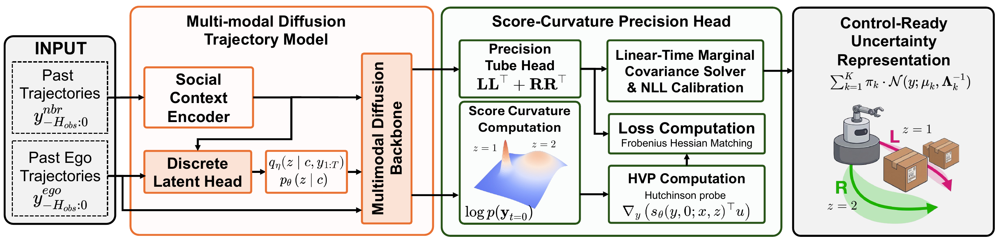
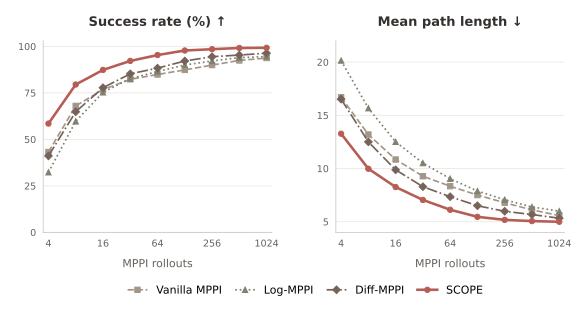
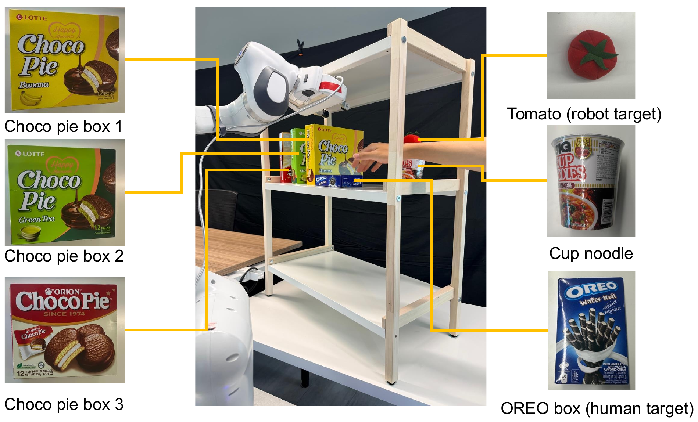
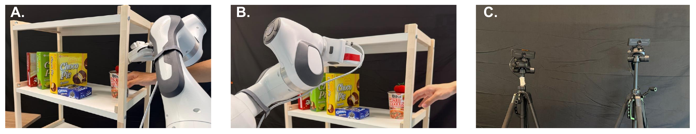
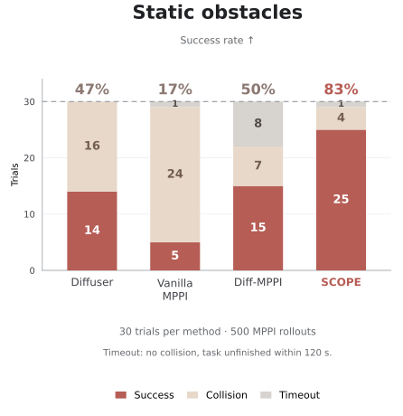
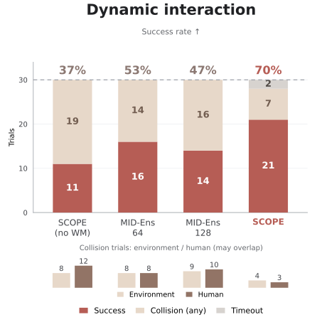

Vanilla MPPI
Fixed exploration
Control-Ready Uncertainty for Trajectory Diffusion
CoRL 2026 Spotlight
1 National University of Singapore 2 Smart Systems Institute, NUS 3 LAAS-CNRS
Diffusion models can represent complex, multimodal trajectory distributions, but extracting uncertainty from them typically requires costly Monte Carlo sampling. This limits their use in real-time control, where robots must rapidly assess risk and maintain safety margins. We introduce Score-Curvature for Online Precision Estimation (SCOPE), a lightweight module that augments diffusion trajectory models with control-ready uncertainty. SCOPE learns a structured precision matrix around each nominal trajectory by distilling score-curvature information and producing calibrated Gaussian tubes with low overhead and without repeated Monte Carlo sampling. These tubes provide per-timestep covariance estimates that can be used both as predicted occupancy for moving agents and as adaptive exploration guides for robot control. We evaluate SCOPE with mode-conditioned multimodal diffusion backbones in pedestrian forecasting, crowd navigation, Maze2D control, and real-world Franka Panda manipulation. Across these settings, SCOPE provides fast uncertainty estimation, which leads to better closed-loop performance.
SCOPE turns diffusion trajectories into Gaussian uncertainty tubes for real-time control.

SCOPE extracts aleatoric trajectory uncertainty from diffusion models for two uses:
Policy prior
A diffusion plan guides MPPI through unseen mazes. SCOPE widens exploration in open regions and narrows it near walls.
Fixed exploration
Log-normal exploration
Diffusion guide + fixed exploration
Same diffusion guide + adaptive exploration

Real-world validation
A Franka Panda transfers a tomato to the upper shelf, with static obstacles or a moving human hand. Each method runs 30 trials per condition.




30 trials per method and condition. Counts derived from the paper’s rounded rates. WM: world model.
SCOPE distills uncertainty from a learned diffusion score, so its reliability depends on the backbone. Limited training coverage or poorly separated modes can lead to miscalibrated uncertainty tubes. In real-robot trials, inaccurate human-motion forecasts or yielding into constrained configurations can still cause failures that short-horizon control cannot recover from. Current experiments use low-dimensional state and geometry inputs. Extending SCOPE to images and point clouds remains future work.